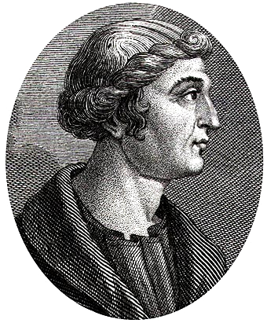

Lesson 6
A Roman senator writing in Greek, 150 years after the revolt — what does Cassius Dio add to our understanding of Boudicca, and how far can we trust him?
~32 min
AH11-6: Analyses and interprets different types of sources for evidence to support an historical account or argument
AH11-7: Discusses and evaluates differing interpretations and representations of the past
AH11-4: Accounts for the different perspectives of individuals and groups
To understand who Cassius Dio was and how his account of Boudicca’s revolt differs from Tacitus’s — and to evaluate what those differences tell us about ancient historiography.
0 of 4 criteria met
By the end of this lesson, I can:
Teacher — Sharing LISC
Display the learning intention and success criteria on the board. Ask students: “How does today’s learning intention connect to what we studied in Lesson 5?” (cold call). The key link is that we’re now examining the second major ancient source for the revolt, and comparing it with the first.
In Lesson 5, we studied Tacitus — the most important ancient source for Boudicca’s revolt. Today we meet the second source: Cassius Dio. Let’s start by checking what you remember from last lesson.
How confident are you about Tacitus from Lesson 5?
Teacher — Retrieval Practice
Use cold call to ask 3–4 students to name one bias of Tacitus from Lesson 5. Then ask: “Why did Tacitus have better access to information about the revolt than most other Roman historians?” (Agricola connection).
CFU strategy: Retrieval gesture vote — “True or false: Tacitus had a personal family connection to Britain through his father-in-law. Thumbs up for true, down for false.” (Answer: true — his father-in-law Agricola served as governor.) If fewer than 80% correct, recap the Agricola connection before proceeding.
Teacher — Modelling (‘I Do’)
Think-aloud as you introduce Dio: “Straight away I notice he’s writing about 150 years after the revolt. That’s like someone today writing about events from the 1870s. What does that tell us about his access to evidence?”
Read the first paragraph aloud, then pause to check understanding before continuing.
Cassius Dio Cocceianus (c. AD 155 – c. AD 235) was a Roman senator of Greek origin, born in Bithynia (modern Turkey). He served as consul (twice) and as governor of several provinces, and he was a close adviser to the Emperor Septimius Severus. His major work, Roman History, covered the history of Rome from its legendary origins to his own time — a massive undertaking written in Greek, not Latin.
Dio wrote his account of Boudicca’s revolt approximately 160 years after the events. He had no access to any living memory of the revolt and relied entirely on earlier written sources — including, very likely, Tacitus himself, though he adds considerable material not found in the Annals. He wrote in a Greek literary tradition that valued dramatic narrative, set speeches, and moral exempla (illustrative examples of virtue or vice). His Roman History is more theatrical than Tacitus’s work, reflecting the influence of Greek historical writing (especially Thucydides) and the literary conventions of the Second Sophistic movement.
Unlike Tacitus, Dio had no family connection to Britain. His account of the revolt lacks the political precision of Tacitus’s version and compensates with dramatic detail: vivid physical descriptions, elaborate speeches, and attention to omens and supernatural signs. Whether these additions reflect real traditions preserved in sources available to Dio, or are largely his own literary invention, is impossible to determine with certainty.

Historian Profile: Cassius Dio
Full name: Lucius Cassius Dio Cocceianus
Born: c. AD 155, Nicaea, Bithynia (modern north-west Turkey)
Died: c. AD 235
Role: Roman Senator · Lawyer · Consul (twice) · Provincial Governor
Language: Greek (not Latin — unusual for a Roman senator)
Writing style: Epic, dramatic, rhetorical — influenced by Greek historiography
Principal Works:
Critical Context: The Epitome Problem
The sections of Cassius Dio’s Roman History covering Boudicca’s revolt (Book LXII) do not survive in Dio’s original text. They exist only as an epitome — an abridged summary made by the Byzantine monk John Xiphilinus in the 11th century AD. This means:
Temporal Distance: How Far Was Dio from the Events?
Boudiccan Revolt (c. AD 60–61) → Tacitus writes ~40–57 years later → Dio born c. AD 155 (~95 years after the revolt) → Dio writes c. AD 211–233 (~150–170 years after the revolt) → Xiphilinus epitome c. AD 1071 (~1,000 years after the revolt).
Compare with Tacitus: written ~40–57 years after the revolt with eyewitness access through Agricola. Dio wrote ~150 years later with no British connection — and his Boudicca chapters survive only through a medieval summary made a further 800 years on.
Teacher — CFU
Use cold call. This is a crucial concept — if fewer than 80% answer correctly, re-teach using the analogy: “Imagine someone writing a one-page summary of a 300-page book, 800 years later. How much of the original would you trust?”
What is the ‘epitome problem’ with Cassius Dio’s account of Boudicca?
Teacher — Guided Reading (‘We Do’)
Read each source extract aloud. After each one, use think-pair-share: “How does this passage differ from what Tacitus told us? What details are new?” (60 seconds). Cold call 2–3 pairs.
The following passages from Dio’s Roman History (via Xiphilinus’s epitome) provide the most vivid physical description of Boudicca in any ancient source, as well as unique details about Celtic religious practice.
PRIMARY SOURCE — Cassius Dio, Roman History, Book LXII, Chapters 1–6. Written c. AD 220. Translation by Earnest Cary, Loeb Classical Library, 1914 (public domain). This is the fullest surviving ancient description of Boudicca’s appearance and her speech before the revolt.
“Boudicca was very tall in stature, in appearance most terrifying, in the glance of her eye most fierce, and her voice was harsh; a great mass of the tawniest hair fell to her hips; around her neck was a large golden necklace; and she wore a tunic of diverse colours over which a thick mantle was fastened with a brooch. This was her invariable attire… She now grasped a spear to help her terrify all beholders, and spoke to them as follows: ‘We British are accustomed to woman commanders in war… But now it is not as a woman descended from noble ancestry, but as one of the people that I am avenging lost freedom, my scourged body, the outraged honour of my daughters. Roman lust has gone so far that not even our bodies are left unpolluted… This is the work of a woman — let us men show them what we can do.’”
PRIMARY SOURCE — Cassius Dio, Roman History, Book LXII, Chapter 6. Written c. AD 220. Translation by Earnest Cary (public domain). This passage describes Boudicca’s ritual of divination before battle — one of the most famous passages in ancient accounts of Celtic religion.
“Having finished speaking, she employed a species of divination, letting a hare escape from the fold of her dress; and since it ran on what they considered the auspicious side, the whole multitude shouted with pleasure, and Boudicca, raising her hand toward heaven, said: ‘I thank thee, Andraste, and call upon thee as woman speaking to woman; for I rule over no burden-bearing Egyptians as did Nitocris, nor over trafficking Assyrians as did Semiramis, nor over the Romans themselves as did Messalina and afterwards Agrippina and now Nero… but over Britons, men that know not how to till the soil or ply a trade, but are thoroughly versed in the art of war and hold all things in common, even children and wives, so that the latter possess the same valour as the men… Grant me victory and preservation of life!’”
Teacher — CFU
Think-pair-share: “Discuss with your partner: why is the reference to Nitocris a problem for treating this speech as historically accurate?” (30 seconds). Then cold call 2 pairs.
Why do historians believe Boudicca’s prayer to Andraste (comparing herself to Nitocris and Semiramis) was composed by Dio, not actually spoken by Boudicca?
Teacher — Scaffolding (‘We Do’)
Work through the comparison table together as a class. For each row, ask: “What does this difference mean for how we use each source?”
Retrieval gesture vote: “Who wrote closer in time to the revolt — Tacitus or Cassius Dio? Hold up 1 finger for Tacitus, 2 for Dio. On three — show me.” (Answer: 1 — Tacitus, ~57 years vs ~160 years.) If fewer than 80% correct, revisit the temporal distance comparison. Then think-pair-share: “Turn to your partner — which source would you trust more for this event, and why?” (90 seconds, then cold call.)
Tacitus and Cassius Dio are our only extended ancient sources for Boudicca’s revolt. Understanding their differences is essential for evaluating the evidence.
| Category | Tacitus | Cassius Dio |
|---|---|---|
| Date written | c. AD 117 | c. AD 211–233 |
| Years after revolt | ~50–57 years | ~150–170 years |
| Language | Latin | Greek |
| Eyewitness link | Yes — via Agricola | None |
| Survives as | Partial original text | Byzantine epitome (Xiphilinus) |
| Boudicca chapters | Annals XIV.29–39 | Roman History LXII.1–12 |
| Physical description | Not given | Detailed (tall, red hair, torque) |
| Pre-battle speech | Yes (Annals XIV.35–36) | Yes (Roman History LXII.3–6) |
| Andraste episode | Not mentioned | Described in detail |
| Overall reliability | Higher for this event | Lower — but valuable cross-check |
Temporal Distance
Writing approximately 150 years after the revolt, Dio had no living informants and no direct access to eyewitnesses. He relied on earlier written accounts — possibly including Tacitus himself — and official Roman records. Any detail unique to Dio (not found in Tacitus) deserves particular scrutiny.
Greek Literary Conventions
Dio wrote in Greek and was deeply shaped by Greek historiographical traditions — particularly Thucydides. His rhetorical speeches (including Boudicca’s pre-battle address) follow Greek conventions: they are literary compositions designed to illuminate character and situation, not verbatim records. The famous physical description of Boudicca is almost certainly a Greek literary portrait, not Roman reportage.
Orientalising & Exotic Detail
Dio’s account adds sensational detail absent in Tacitus — particularly the graphic description of Roman women being tortured and impaled at the sanctuary of Andraste (Roman History 62.7). Scholars debate whether this reflects genuine tradition or rhetorical invention designed to establish Boudicca’s revolt as a transgression of civilised order requiring Roman restoration.
When Tacitus and Cassius Dio agree on a detail about the revolt, historians treat that detail with:
Match each feature of the Boudicca account to the historian it best describes:
Teacher — Discussion (‘We Do’)
This section requires careful handling. Use think-pair-share for the key question: “Does the fact that these speeches are ‘invented’ make them useless as historical sources?” Allow 90 seconds for pair discussion, then cold call 3 pairs. Guide students toward the nuanced answer: they are useless as records of Celtic speech but invaluable as evidence of Roman historiography.
Both Tacitus and Cassius Dio include speeches by Boudicca — and neither could possibly have known what she actually said. In ancient historical writing, speeches were a recognised literary device: historians composed speeches that they believed a historical figure would or should have said given their character and situation, using them to make explicit the themes and moral lessons of their narrative.
The Greek historian Thucydides (5th century BC) famously acknowledged this practice: “I have made each side say what seemed to me most appropriate given the circumstances, keeping as close as possible to the general sense of what was actually said.” Roman historians followed a similar convention. This means that Boudicca’s speeches, as reported by Tacitus and Dio, tell us more about what these Roman historians wanted her to represent than about what she actually said.
Critical Thinking: Are Invented Speeches Useless?
Does the fact that these speeches are “invented” make them useless as historical sources? Not necessarily. They still reveal: (1) what Romans knew or believed about Celtic customs; (2) what political and moral points the historian wanted to make; and (3) how the revolt was understood by educated Romans. They are invaluable sources for Roman historiography — even if not for Celtic history.
EXTENSION
“Boudicca, a Briton woman of the royal family and possessed of greater intelligence than often belongs to women…”
— Cassius Dio (via Xiphilinus), Roman History 62.2
Complete each field. Use the hint button if you need guidance.
The invented speeches in Tacitus and Dio are best described as:
Choose the level that challenges you, or work through all three.
Teacher — Independent Practice (‘You Do’)
Students should attempt these only after a high success rate on the CFU questions. Direct all students to Foundation first.
Exit ticket: Students answer Foundation Q1 on a sticky note before leaving.
Identify and describe
Analyse and explain
Evaluate and debate
Click each card to reveal its definition.
Return to the success criteria from the start of this lesson. Can you now tick off each one? If any remain unticked, scroll back and review the relevant section.
Teacher — Review of Learning
Self-assessment for each criterion: “Thumbs up if confident, sideways if partly there, down if you need more help.”
Exit ticket: “On a sticky note, write one difference between Tacitus and Cassius Dio as sources for the revolt.” Collect as students leave.
How confident do you feel about this lesson’s content?